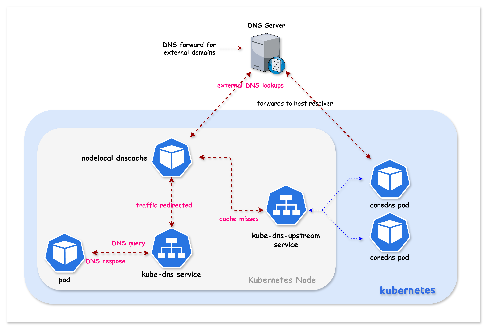

UDP :53Lesson 17 · CoreDNS · iptables · Cache
NodeLocal DNSCache
让 DNS 先在本节点命中
Pod 仍然查询 10.96.0.10，但答案优先从所在节点的缓存返回；只有 miss 才回源 CoreDNS。
10.96.0.10169.254.20.10DaemonSetNOTRACK
QUERY
10.96.0.10HIT → local responseMISS / TCP
kube-dns-upstreamHIT 不离开节点 / MISS 才经 upstream Service 回源
Before NodeLocal
默认 DNS 路径把一次查询变成跨节点网络请求
192.168.x.xUDP query
10.96.0.10DNAT
:53额外时延
命中远端 CoreDNS 时，要经过 Service 转发和节点间网络。
UDP conntrack
大量短查询会增加表项压力，并可能暴露竞态问题。
尾延迟
上游抖动、丢包与重试都会被业务请求放大。
02
Cache, not authority
NodeLocal 是每节点缓存层，不是第二套权威 DNS
node-local-dns
监听本地地址、缓存响应、暴露指标、miss 时转发。
registry.k8s.io/dns/k8s-dns-node-cache:1.26.4MISS ›
CoreDNS
读取 Kubernetes 服务发现信息，并按 Corefile 完成权威解析与外部转发。
kube-dns-upstream边界：缓存 Pod 不直接监听 Kubernetes API 生成 Service 记录；它把集群域 miss 交给 CoreDNS。
03
Why it exists
它同时优化时延、连接跟踪与可观测性
本地命中
同名查询直接从节点缓存返回，减少网络跳数。
绕开 DNAT
Pod 到本地缓存的 DNS 包使用 NOTRACK，不占用普通 Service NAT 路径。
TCP 回源
集群域 miss 可用 TCP 访问 CoreDNS，连接关闭后 conntrack 更快清理。
负缓存
短时间缓存 NXDOMAIN，抑制错误域名造成的查询风暴。
节点级指标
每个 Node 都有 hit、miss、request、entry 指标。
故障域更小
已有缓存可吸收部分上游短时抖动，但不能永久替代上游。
04
Course architecture
原课件拓扑：Pod 到本地缓存，miss 再到 upstream

kube-dns 入口在节点内透明接管；cluster miss 走 kube-dns-upstream，外部域走节点上游 resolver。05
containerlab/17-nodelocal-dnscache
Lesson 17 使用三节点 Kind 与 Calico 3.30.0
kindest/node:v1.32.2NodeLocal × 1NodeLocal × 1| 项目 | 课程值 | 用途 |
|---|---|---|
| Pod CIDR | 192.168.0.0/16 | Calico 工作负载地址 |
| Service CIDR | 10.96.0.0/16 | kube-dns = 10.96.0.10 |
| Calico IPPool | VXLANCrossSubnet /26 blocks | 跨子网 VXLAN，出集群 NAT |
| NodeLocal | 169.254.20.10/32 | 本地监听地址 |
06
Do not skip the baseline
deploy.sh 只搭集群、Calico 与 dns-test
Containerlab
sudo containerlab deploy -t k01.clab.yamlCalico
operator + custom-resources.yamlTest Pod
kubectl apply -f tools/dns-test-pod.yaml$ cd containerlab/17-nodelocal-dnscache $ chmod +x deploy.sh $ ./deploy.sh $ export KUBECONFIG=$(pwd)/k01.kubeconfig $ kubectl get nodes -o wide
课程节奏：脚本没有安装 NodeLocal DNSCache。先证明标准 DNS 正常，再手动部署并比较前后差异。
07
Know the placement
先确认 CoreDNS 与 dns-test 分布在哪些节点
$ kubectl get nodes NAME STATUS ROLES VERSION k01-control-plane Ready control-plane v1.32.2 k01-worker Ready <none> v1.32.2 k01-worker2 Ready <none> v1.32.2 $ kubectl get pod -n kube-system -l k8s-app=kube-dns -o wide NAME READY STATUS NODE coredns-... 1/1 Running k01-control-plane coredns-... 1/1 Running k01-control-plane $ kubectl get pod dns-test -o wide NAME READY STATUS IP NODE dns-test 1/1 Running 192.168.x.x k01-worker
不要照抄示例 IP：Pod IP 与调度节点会变化；后续用 JSONPath 动态取值。
08
Before installation
kube-dns 是 Pod 当前看到的唯一 DNS 入口
$ kubectl get svc kube-dns -n kube-system NAME TYPE CLUSTER-IP PORT(S) kube-dns ClusterIP 10.96.0.10 53/UDP, 53/TCP, 9153/TCP
NodeLocal 部署后，这个 Service 仍然存在；不同的是，本节点把相同的 10.96.0.10/32 也绑定到本地 dummy interface。
09
What the application sees
Pod 的 resolv.conf 固定指向 10.96.0.10
$ kubectl exec dns-test -- cat /etc/resolv.conf search default.svc.cluster.local \ svc.cluster.local \ cluster.local nameserver 10.96.0.10 options ndots:5
短名称依次补齐 namespace、svc 与 cluster.local。
应用只知道 kube-dns ClusterIP，不知道 CoreDNS Pod IP。
少于 5 个点的名称先尝试搜索域，可能产生多次查询。
10
Pick a safe local IP
169.254.20.10 要唯一、可绑定且不冲突
IPv4 link-local 范围内的节点本地地址。
1 不与 Service CIDR、Pod CIDR、Node IP 冲突
2 不被节点上已有进程或接口占用
3 所有 kubelet / manifest 使用同一个值
4 IPv6 环境可选择合适的 ULA 地址
$ kubectl get svc -A -o wide $ kubectl get pod -A -o wide $ docker exec k01-worker ip addr
11
Prepare nodelocaldns.yaml
复制官方清单，再替换三个显式占位符
$ cp nodelocal-dnscache/nodelocaldns.yaml . $ grep -o '__PILLAR__[A-Z_]*__' \ nodelocaldns.yaml | sort -u __PILLAR__LOCAL__DNS__ __PILLAR__DNS__DOMAIN__ __PILLAR__DNS__SERVER__ __PILLAR__CLUSTER__DNS__ __PILLAR__UPSTREAM__SERVERS__
LOCAL__DNS169.254.20.10DNS__DOMAINcluster.localDNS__SERVER10.96.0.10CLUSTER__DNS运行时写入UPSTREAM__SERVERS运行时写入12
Course commands
从集群读取 kube-dns IP，避免把环境值写死
$ kubedns=$(kubectl get svc kube-dns -n kube-system \ -o jsonpath={.spec.clusterIP}) $ domain="cluster.local" $ localdns="169.254.20.10" $ sed -i "s/__PILLAR__LOCAL__DNS__/$localdns/g; \ s/__PILLAR__DNS__DOMAIN__/$domain/g; \ s/__PILLAR__DNS__SERVER__/$kubedns/g" nodelocaldns.yaml $ grep -n '__PILLAR__LOCAL\|__PILLAR__DNS__' nodelocaldns.yaml # no output
跨平台提醒：课程是在 Linux/containerlab 环境执行，使用 GNU
sed -i。在 macOS 或 PowerShell 中要改用对应语法。13
Five resources
一个 YAML 同时创建身份、回源、配置与节点代理
ServiceAccount
node-local-dnsService
kube-dns-upstreamConfigMap
node-local-dnsDaemonSet
node-local-dnsHeadless Service
metrics :9253数据面
DaemonSet 在每个节点监听 53，并写本机接口与 iptables 规则。
回源与观测
upstream Service 选中 CoreDNS；Headless Service 让 Prometheus 发现每个缓存 Pod。
14
Why it can intercept traffic
hostNetwork 与 NET_ADMIN 让缓存进程进入节点数据面
spec: priorityClassName: system-node-critical hostNetwork: true dnsPolicy: Default tolerations: - operator: Exists containers: - name: node-cache securityContext: capabilities: add: [NET_ADMIN]
监听节点网络命名空间中的本地 IP。
缓存 Pod 自己不再递归使用集群 DNS。
创建 dummy interface 与维护 iptables 规则。
在资源紧张时提高 DNS 节点组件优先级。
15
NodeLocal Corefile
四个 server block 把集群域、反向域和外部域分开
| Server block | 缓存 | 回源 | 传输 |
|---|---|---|---|
cluster.local:53 | success 9984 / 30s denial 9984 / 5s | kube-dns-upstream | force_tcp |
in-addr.arpa:53 | 30s | kube-dns-upstream | force_tcp |
ip6.arpa:53 | 30s | kube-dns-upstream | force_tcp |
.:53 | 30s | Node /etc/resolv.conf | 按上游协商 |
课程原始清单的外部域 block 没有 force_tcp；后续“开启日志”示例额外写了它。演示时以实际 ConfigMap 为准。
16
Positive and negative cache
success 与 denial 使用不同 TTL 控制新鲜度
已有记录的正常响应，减少重复查询。
NXDOMAIN / NODATA 短暂缓存，避免错误名称持续打到上游。
为什么负缓存更短
刚创建的 Service 不应被旧 NXDOMAIN 长时间遮住。
容量不是内存上限
每个 server block 都有缓存，内存还受并发查询 goroutine 影响。
17
Two upstream decisions
集群域 miss 走 kube-dns-upstream，外部域走节点 resolver
集群服务发现
NodeLocalTCPkube-dns-upstreamDNATCoreDNS
forward . __PILLAR__CLUSTER__DNS__ { force_tcp }外部名称
NodeLocalforwardNode resolv.confnetworkUpstream DNS
forward . __PILLAR__UPSTREAM__SERVERS__18
The manifest is mode-sensitive
iptables 模式可透明接管；IPVS 模式必须改 kubelet DNS
| 项目 | iptables（本课） | IPVS |
|---|---|---|
| NodeLocal 绑定 | 169.254.20.10 + 10.96.0.10 | 只绑定 169.254.20.10 |
| Pod resolv.conf | 仍是 10.96.0.10 | 应改为 169.254.20.10 |
| 原因 | NOTRACK + local route 可绕开 Service DNAT | IPVS 已占用 kube-dns VIP |
| kubelet | 无需调整 --cluster-dns | 设置本地监听 IP |
不要混用：直接把 iptables 模式的双地址参数放进 IPVS 集群，可能造成地址绑定冲突或 DNS 不可用。
19
Deploy NodeLocal
创建清单后，先确认五类对象都落地
$ kubectl create -f nodelocaldns.yaml serviceaccount/node-local-dns created service/kube-dns-upstream created configmap/node-local-dns created daemonset.apps/node-local-dns created service/node-local-dns created $ kubectl rollout status ds/node-local-dns -n kube-system daemon set "node-local-dns" successfully rolled out
幂等性：课程使用
create 展示首次创建；反复演示或运维更新可使用 apply，但要先理解差异。20
One cache per node
三节点应看到三个 node-local-dns Pod
$ kubectl get pods -n kube-system -l k8s-app=node-local-dns -o wide $ kubectl get ds node-local-dns -n kube-system NAME DESIRED CURRENT READY UP-TO-DATE AVAILABLE node-local-dns 3 3 3 3 3
21
Same selectors, different roles
kube-dns 保持入口，kube-dns-upstream 专门服务 miss
kube-dns
10.96.0.10Pod resolv.conf 中的稳定入口；本课由节点本地接管。
kube-dns-upstream
10.96.x.xselector 仍为 k8s-app=kube-dns，用于 miss 回源。
node-local-dns
clusterIP: None暴露每个缓存 Pod 的 9253 指标。
$ kubectl get svc -n kube-system | grep -E 'kube-dns|node-local-dns'
22
The transparent interception anchor
同一 dummy interface 同时拥有本地 IP 与 kube-dns VIP
$ NODE=$(kubectl get pod dns-test -o jsonpath='{.spec.nodeName}') $ docker exec $NODE ip addr show nodelocaldns X: nodelocaldns: <BROADCAST,NOARP> mtu 1500 qdisc noop state DOWN group default link/ether 00:00:00:00:00:00 brd ff:ff:ff:ff:ff:ff inet 169.254.20.10/32 scope global nodelocaldns inet 10.96.0.10/32 scope global nodelocaldns
两条 /32 都在
这是 iptables 透明模式的关键证据。
state DOWN 不等于故障
dummy interface 没有物理 carrier；以地址、路由和实际解析为准。
23
No application change
部署前后，Pod 的 resolv.conf 完全不变
CoreDNS Service path
nameserver 10.96.0.10kube-proxy DNAT 到 CoreDNS Pod。
SAME
CONFIG
CONFIG
Node-local path
nameserver 10.96.0.10本节点先接管，miss 再回源。
$ kubectl exec dns-test -- cat /etc/resolv.conf nameserver 10.96.0.10
24
Order of operations
一条 DNS 查询按 raw、nat、route、INPUT 的顺序处理
Pod ingress
dst 10.96.0.10:53DNS
raw PREROUTING
NOTRACKUNTRACKED
nat PREROUTING
DNAT skippedsame dst
Local route
dev loINPUT
NodeLocal
listen :53顺序决定结果：raw 表先于 nat，先标成 UNTRACKED 后，Service DNAT 不能再改写这个 DNS 包的目标地址。
25
Validate step 2
NodeLocal 为两个监听 IP、两种协议写入 NOTRACK
$ docker exec $NODE iptables -t raw -S | \
grep -E "169.254.20.10|10.96.0.10"
-A PREROUTING -d 169.254.20.10/32 -p udp --dport 53 -j NOTRACK
-A PREROUTING -d 169.254.20.10/32 -p tcp --dport 53 -j NOTRACK
-A PREROUTING -d 10.96.0.10/32 -p udp --dport 53 -j NOTRACK
-A PREROUTING -d 10.96.0.10/32 -p tcp --dport 53 -j NOTRACK
-A OUTPUT -d 169.254.20.10/32 -p udp --dport 53 -j NOTRACK
-A OUTPUT -d 169.254.20.10/32 -p tcp --dport 53 -j NOTRACK
-A OUTPUT -d 10.96.0.10/32 -p udp --dport 53 -j NOTRACK
-A OUTPUT -d 10.96.0.10/32 -p tcp --dport 53 -j NOTRACK
26
Why raw comes first
NOTRACK 的目的不是加速，而是阻止 kube-proxy 抢走目标地址
标记 UNTRACKED
conntrack 不为 Pod→NodeLocal 的 DNS 包维护普通连接状态。
NAT 无法建立映射
DNAT 依赖连接跟踪保存正反向地址转换。
目标保持不变
dst=10.96.0.10 继续进入路由决策。
本地监听胜出
内核发现该 /32 属于本机，交给 NodeLocal。
精确表述：不是“删除 kube-proxy 规则”，也不是“NodeLocal 优先级更高”；是 raw 表先决定不跟踪，让后续 nat 无法为该包建立转换。
27
Validate step 3
kube-proxy 的 kube-dns DNAT 规则仍然存在
$ docker exec $NODE iptables -t nat -S | \
grep "kube-dns:dns cluster IP" | head -2
-A KUBE-SERVICES -d 10.96.0.10/32 -p udp \
--dport 53 -j KUBE-SVC-TCOU7JCQXEZGVUNU
-A KUBE-SERVICES -d 10.96.0.10/32 -p tcp \
--dport 53 -j KUBE-SVC-ERIFXISQEP7F7OF4
28
Validate step 4
local 关键字证明 10.96.0.10 会在当前节点终结
$ docker exec $NODE \ ip route get 10.96.0.10 local 10.96.0.10 dev lo \ src 10.96.0.10 uid 0 cache <local>
为什么显示 dev lo：Linux local table 表示该地址属于本机；即使地址配置在
nodelocaldns dummy interface，local route 的交付设备仍可显示 loopback。29
Validate step 5
INPUT ACCEPT 允许 DNS 到达节点本地进程
$ docker exec $NODE iptables -S INPUT | \
grep -E "169.254.20.10|10.96.0.10"
-A INPUT -d 169.254.20.10/32 -p udp --dport 53 -j ACCEPT
-A INPUT -d 169.254.20.10/32 -p tcp --dport 53 -j ACCEPT
-A INPUT -d 10.96.0.10/32 -p udp --dport 53 -j ACCEPT
-A INPUT -d 10.96.0.10/32 -p tcp --dport 53 -j ACCEPT
30
Fast path
HIT：查询与响应都留在同一节点
A kubernetes.default1 QUERY
cache lookupHIT2 RESPONSE
NOERROR0 × cross-node hop0 × upstream query1 × cache hit counter
31
Slow path
MISS：NodeLocal 通过 upstream Service 回源 CoreDNS
UDP :53QUERY
MISSTCP
ServiceDNAT
authoritative answer回包：答案沿连接返回 NodeLocal，写入本节点缓存，再由 NodeLocal 回给原 Pod；下一次相同查询可能走 HIT。
32
Cross-node only on miss
CoreDNS 在另一节点时，只有 miss 才产生 node-to-node 流量
UDP
MISS · TCP
response → cache → Pod
HIT
只在 Worker A 内部流动。
MISS
才穿过 Calico node-to-node 数据面到远端 CoreDNS。
33
Root zone forwarding
外部域 miss 不经过 kube-dns-upstream 的集群域路径
cache missupstream resolver.:53 { cache 30 bind 169.254.20.10 10.96.0.10 forward . __PILLAR__UPSTREAM__SERVERS__ prometheus :9253 }
34
Functional proof
nslookup 成功只证明能解析，还要结合指标证明命中缓存
$ kubectl exec dns-test -- nslookup kubernetes.default Server: 10.96.0.10 Address: 10.96.0.10#53 Name: kubernetes.default.svc.cluster.local Address: 10.96.0.1
nslookup 有正确答案。
Server 仍显示 10.96.0.10。
接口、NOTRACK、local route 完整。
同节点 metrics 的 hit 递增。
35
Per-node observability
指标必须选 dns-test 所在节点的 NodeLocal Pod
$ TEST_NODE=$(kubectl get pod dns-test \ -o jsonpath='{.spec.nodeName}') $ NODELOCAL_POD=$(kubectl get pods -n kube-system \ -l k8s-app=node-local-dns \ --field-selector spec.nodeName=$TEST_NODE \ -o jsonpath='{.items[0].metadata.name}') $ kubectl port-forward -n kube-system \ $NODELOCAL_POD 9253:9253 & $ sleep 2
常见误判：随便 port-forward 任意一个 NodeLocal Pod，再从另一节点的 dns-test 发查询，计数当然可能不动。
36
CoreDNS cache metrics
request、miss、hit 与 entries 共同描述缓存行为
coredns_cache_requests_total进入 cache 插件的总请求。
coredns_cache_misses_total需要回源的请求。
coredns_cache_hits_totalsuccess 与 denial 命中。
coredns_cache_entries当前缓存条目数。
$ curl -s http://127.0.0.1:9253/metrics | \
grep -E "coredns_cache_(hits|misses|requests|entries).*10.96.0.10.*cluster.local"
37
Watch a hit happen
重复同一查询，success hit 应在 TTL 内递增
curl metricskubectl exec dns-test -- nslookup ...same metric label set$ curl -s http://127.0.0.1:9253/metrics | grep "coredns_cache_hits_total.*success.*cluster.local" $ kubectl exec dns-test -- nslookup kubernetes.default $ curl -s http://127.0.0.1:9253/metrics | grep "coredns_cache_hits_total.*success.*cluster.local" $ kill %1
38
Temporary debugging
调试时在每个 server block 加 log，再滚动重启
cluster.local:53 { log errors cache { success 9984 30 denial 9984 5 } bind 169.254.20.10 10.96.0.10 forward . __PILLAR__CLUSTER__DNS__ { force_tcp } }
$ kubectl edit configmap \ node-local-dns -n kube-system $ kubectl rollout restart daemonset \ node-local-dns -n kube-system $ kubectl rollout status daemonset \ node-local-dns -n kube-system
别漏 zone：要同时观察 cluster.local、反向解析和外部域，需在对应的每个 server block 中添加
log。39
Read the evidence
一行日志能同时看到客户端、查询、协议、状态与耗时
[INFO] 192.168.82.65:54312 - 42953 "A IN kubernetes.default.svc.cluster.local. udp 54 false 512" NOERROR qr,aa,rd 106 0.000232824s [INFO] 192.168.82.65:38291 - 18276 "A IN google.com. udp 28 false 512" NOERROR qr,rd,ra 54 0.023451s
client IP:portquery IDtype + nameprotocol + bytesrcodeduration
40
Turn it back off
排障结束要移除 log，避免高基数输出拖慢 DNS
临时开启
精确观察某个节点、某段时间、某类查询。
短时、定向、有人值守默认关闭
每次 DNS 请求一行日志，高 QPS 会放大 CPU、I/O 与存储成本。
长期看 metrics 与采样$ kubectl edit configmap node-local-dns -n kube-system # remove every temporary `log` line $ kubectl rollout restart daemonset node-local-dns -n kube-system $ kubectl rollout status daemonset node-local-dns -n kube-system
41
Operational sizing
缓存容量、并发与 OOM 都必须按节点评估
约 30MB / 10000 entries / server block
官方给的是量级估算，不是硬上限；多 zone 会叠加。
查询 goroutine 也占内存
上游慢时并发堆积，峰值内存可能明显增加。
Pod 重启期间有短暂空窗
DaemonSet 会拉起新进程，但 DNS 可短时失败。
异常退出要检查残留规则
进程不可用而透明规则仍在时，查询可能被送到无人监听的本地地址。
课程清单只声明 requests: memory 5Mi，它不是 usage limit。生产应基于指标设置合理 request/limit，并预留查询突发。
42
Troubleshooting ladder
按配置、进程、规则、路由、回源五层找第一个断点
Pod config
cat /etc/resolv.confiptables 模式应仍是 10.96.0.10。
DaemonSet
get pods -o wide每节点 Ready，liveness 正常。
Interface
ip addr show nodelocaldns两个 /32 均已绑定。
Netfilter
iptables -t raw / -S INPUTNOTRACK 与 ACCEPT 都存在。
Route
ip route get 10.96.0.10必须显示 local。
Upstream
svc/endpoints + logsmiss 能否到 kube-dns-upstream。
43
Live demo runbook
二十分钟演示顺序：先基线，再接管，再证明命中
./deploy.sh三节点、Calico、dns-test readyget svc kube-dns确认 10.96.0.10cat /etc/resolv.conf记录部署前入口cp + sed nodelocaldns.yaml替换三个占位符kubectl create -f创建五类资源get ds/pod -o wide确认每节点一个缓存
ip addr show nodelocaldns确认双地址绑定iptables -t raw -S确认 NOTRACKip route get 10.96.0.10确认 local routenslookup kubernetes.default验证透明解析port-forward :9253观察 hit 递增log + rollout + logs短时展示查询细节
清理：
kill %1 停止 port-forward；删除临时 log；最后执行 chmod +x destroy.sh && ./destroy.sh。44
Summary and sources
NodeLocal DNSCache 的完整证据链
就近
DaemonSet 为每个 Node 提供本地 DNS 缓存。
透明
iptables 模式继续使用 10.96.0.10，无需改 Pod。
接管
NOTRACK 保留目标，local route 将查询交给本机进程。
回源
miss 通过 upstream Service 到 CoreDNS，并写回节点缓存。
45